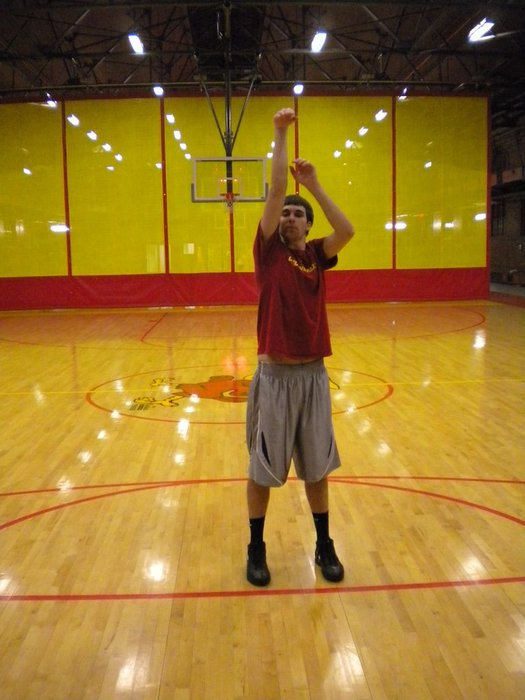
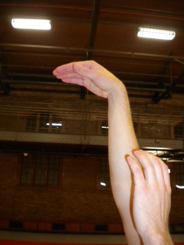

During this step you simultaneously straighten your legs, extend your shooting elbow, and flick your shooting wrist and fingers forward. You should hold this position until the ball is half way to the basketball rim. Your shooting arm should end up fully extended above your head with the palm of your hand facing the ground as shown in this picture. These actions should all occur in one smooth motion.
Your follow through this is the flipping of your wrist and fingers forward as you release the ball. Follow through is a very important step as it is what guides the basketball to the rim and gives it a backspin.
